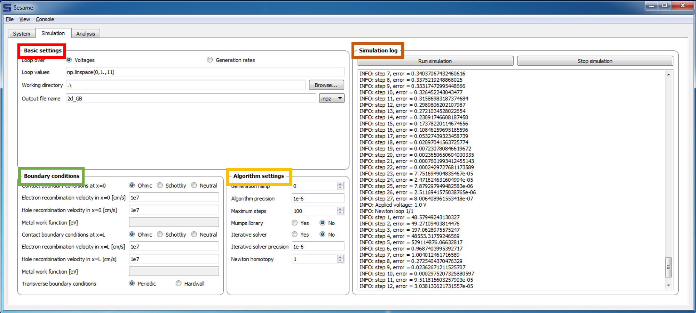

4.2. Simulation Tab¶
The system tab is used to define the conditions of the simulation (e.g. the applied voltage and contact boundary conditions). The system window is shown below:
Basic Settings
The GUI allows looping over two types of variables: the applied voltage and a user-defined parameter in the generation rate (this variable is defined in the bottom-left field of the System tab). The Loop values can be specified with numpy functions for array construction (as in the example shown above), or can be specified manually (e.g. [0, .1, .2]).
The working directory and output file name determine the location and name of simulation output files. The files can be saved in python format (.npz) or matlab format (.mat). The output filenames are appended by “_x”, where x labels the loop index.
Boundary Conditions Boundary conditions are specified next. Possible choices for contact boundary conditions Ohmic, Schottky, or Neutral, and recombination velocity for electrons/holes are specified here. Transverse boundary conditions can be periodic or hardwall.
Algorithm Settings The algorithm settings are as follows: There’s an option to ramp the generation rate. This can be useful to assist in convergence. If a system under illumination fails to converge, one can increase the generation ramp value. Setting the value to “n” means the initial illumination is decreased by a factor of . The generation is increased by factors of 10 until the desired generation rate is reached.
The Algorithm precision sets the error tolerance for the root-finding algorithm. A value of 1e-6 is typically acceptable. Maximum steps determines how many steps the Newton-Raphson algorithm attempts before aborting. The Mumps library option can be selected if the MUMPS library is installed. This library increases the speed up to several times, depending on system size. There is also an option for iterative solver, which is less accurate, but faster for very large systems (such as 3-d systems). The iterator solver precision is specified in the following field.
Simulation Log
The simulation is launched with the Run simulation button on the top right. The log window gives a real-time output of the error in the solution obtained with the Newton-Algorithm. The solution procedure can be aborted at any time by clicking Stop simulation.